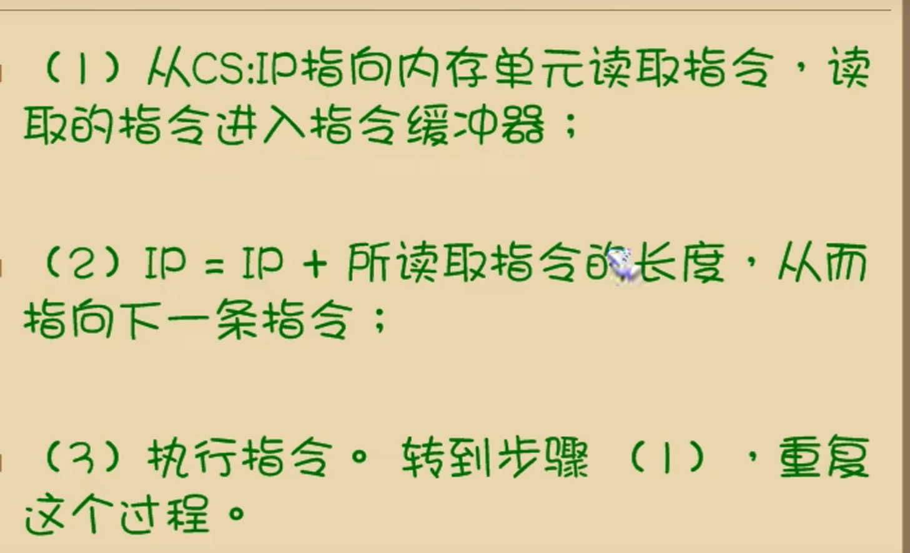
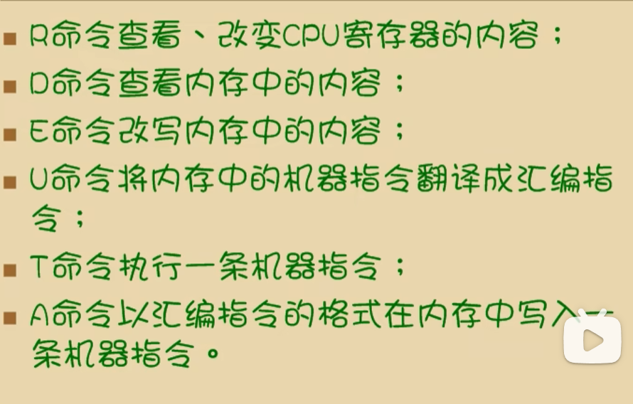
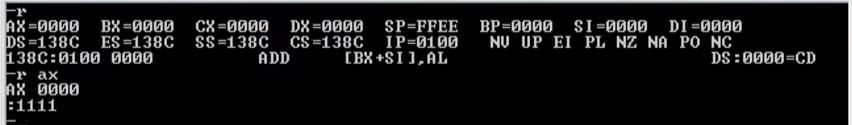
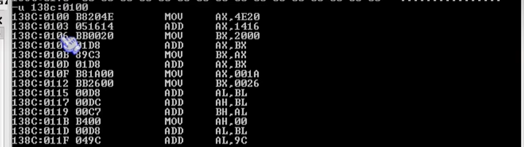
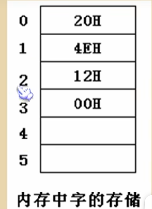
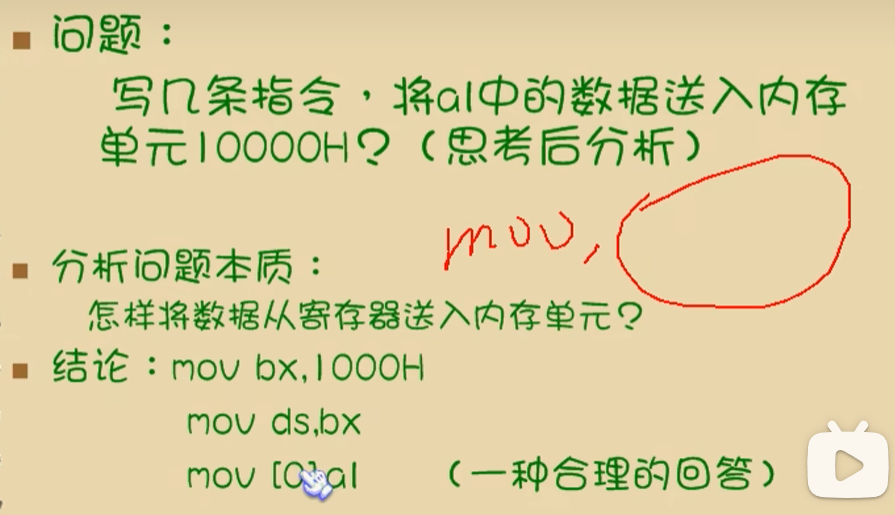
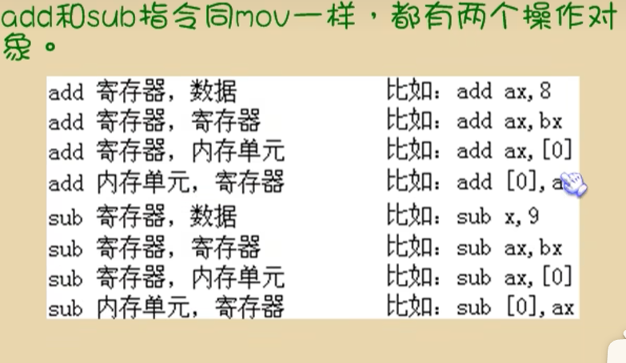
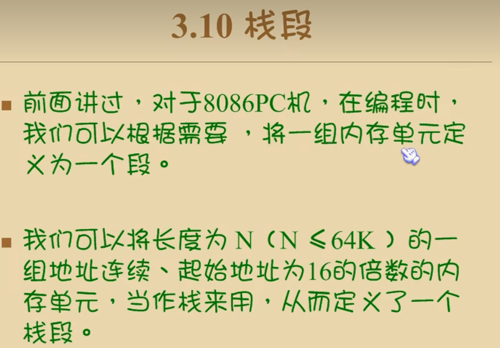

汇编语言的组成：
1. 汇编指令（机器码的助记符）// 直接等价于特定的机器指令，所以反编译一般是汇编
2. 伪指令（编译器执行）// 没有对应的机器码，和其他符号一样，都是编译器实现的
3. 其他符号（编译器识别）// 转化成逻辑运算
存储器：
指令和数据都是在存储器中存放，也就是内存（磁盘内的数据得先到内存中才能被使用）
虚拟内存，就是用部分硬盘当作内存用（18 年也不至于是 sata2 吧）
存储单元：
// 包括缓存
被划分为若干个存储单元，每个单元从 0 开始编号
制图时从上到下，由低地址到高地址，但是读起来还是从高开始（忽略第一个 1 之前的 0）
单位就不必说了，最后那个 B 代表 Byte
CPU 对存储器的读写：
三类信息交互
1. 地址信息
2. 控制信息
3. 数据信息
CPU 与内存之间的总线，实际上就是包含了这三者，即地址总线，数据总线，控制总线（逻辑划分）。
它们都是线性排列的
指令与数据：
同样的二进制信息，可以是数据，也可以是信息。具体当作什么，取决于它是在哪种总线上
1. 地址总线
指定存储单元，总线能传输多少，就能对多少个存储单元进行寻址。
（64 位，32 位说的就是地址总线的宽度）//64bit，即 8byte
要实现 64 位，CPU，OS，软件都必需是 64 位的，这是因为向下继承
内存会自动定位从地址总线来的地址
有 N 根地址总线位宽就是 N（其实就是 Nbit），一位最多可以指定 2^n 个内存单元
2. 数据总线
宽度越大，传输速度越快
注意，索引从低到高，传输数据是从低位开始，也就是数据的后面一段（多次传输时）
3. 控制总线
操作只有读和写（1/0），控制总线是个总称，数量越多，意味着 CPU 可以控制的外部元器件的种类越多，有多少根，就有多少种
内存读写是几根控制线综合发出的（有俩，读 / 写信号输出控制线）
内存地址空间：
大小就是 CPU 的地址线宽度可寻得的内存单元个数
主板，接口卡，声卡（其实不是没了），RAM，ROM (就是 BIOS 的那个，可以刷)
CPU 看到的其他元器件：

其实就是看成逻辑存储器，所有内存单元构成的存储空间是一维线性空间，每个内存单元都有唯一的地址，即物理地址
内存空间地址段分配：
// 实际上是在分配 CPU 的总线 //
不同设备有自己分配到的地址段，各部分具体大小看 CPU。其实就是将所有的存储器统一起来。
寄存器（CPU 工作原理）
CPU 概述
由运算器，控制器，寄存器组成，也是要以总线相连
通用寄存器
一共有 14 个：（16 位）
AX,BX,CX,DX,SI,DI,SP,BP,IP,CS,SS,DS,ES,PSW
它们甚至在缓存之前。寄存器实际上不只 14 个，指令集也会有自己的寄存器。
寄存器都是 16 位的 2 字节，也就是 1 字
更古早的 U 寄存器只有 8 位，为了兼容，现在的寄存器可以分成俩八位来用
比如 AX 可以分为 AH 和 AL。BH,CH,DH 同理
字在寄存器中的存储
数据：18
二进制表示：10010
在AX中：0（高位）000000000010010（低位）//可见，寄存器最大只能存储2^16-1
写成16进制表示：0012H
//H代表是十六进制，只有4个十六进制数（因为1个十六进制数对4个二进制数，即2^4=16）,也有0x0012的表示法
1 字就是 16bit,2byte（再次重申），现在 CPU 就是一次一字
汇编指令：
// 不区分大小写
mov ax,18 //把18送入ax寄存器中 即ax=18 mov:传送指令
add ax,8 /将ax中的值加上8 即ax=ax+8
mov ax,bx //将bx中的数据送入a下 即ax=bx,注意是后面赋到前面
add ax,bx //将ax与bx中的相加，并存在ax中 即ax=ax+bx
add ax,4E20H //什么进制都行，八进制前面加0，二进制最后加B，十进制都不加
add 可能导致上溢
add al,85H //只加在了低8位，即后面的那俩，这时如果发生上溢，也是直接舍弃
CPU 给出物理地址的方法：
以 8086 为例:

8086 的地址总线是 20 位的，寻址能力 1M，但是寄存器是 16 位，寻址能力 64K，所以这里采用了将两个 16 位地址合成一个 20 位的物理地址的方法
地址加法器的原理：
物理地址 = 段地址 16（对于 16 进制就是左移 1 位，二进制 4 位）+ 偏移地址
物理地址 = CS*16+IP

注：上图都是 16 进制
// 二进制每左移一位，这个数据（的十进制表示）*2。n 位就是 2^n。其他进制同理
段的概念
内存本身没有分段，分段实际上是 CPU 干的事，用于给出物理地址，这使得我们可以分段管理内存，偏移地址是 16 位，所以寻址能力为 64K，所以一个段最大也就 64K
// 输出同一个物理地址，可以有许多组段地址和偏移地址
描述方法：数据在 21F6H 内存单元中 = 2000:1F60 单元中 = 在 2000 段的 1F60H 单元中
段寄存器
8086（x86）有 4 个段寄存器
[CS](code segment，就是用来存储段地址的),[DS](data segment),[SS](stack segment),[ES](extra segment),x64 会多 4 个，都是类似于 ES 的，不是专用
CS 和 IP 是最常用的
整个过程：

注：IP 有个指令自加器，会自动加上指令长度
CS 与 IP 不能使用 mov 指令，要用 jmp (转移地址)
jmp 2AE3:3 //也就是2AE30+00003=2AE33
JMP 3:0B16 //也就是00030+00B16=00B46,汇编指令不区分大小写
代码段
将长度为 N (N<=64KB) 的一组大麦，存在一组地址连续，起始地址为 16 的倍数的内存单元中，这就定义了一个代码段
只有 CS:IP 指定的代码段才会执行
Debug 程序

R 命令：这里实现了修改，这个可以修改 CS 和 IP

T 指令：会返回一个和 R 命令一样的查看（运行之后的）
D 指令：返回的是十六进制
E 命令：要使用机器指令的格式写操作
A 命令：-a 回车，接下来一条指令一执行
U 命令：

退出输入 quit（事实上 q 开头就行）
内存访问
内存中字的存储

比如，上图中 1 地址单元存放的字型数据是 124EH
俩个连续的内存单元，n 和 n+1，可以看成两个单元，也可以看成 n 字单元（不是 n+1）的搞字节单元和低字节单元
DS (数据段寄存器)[address] // 这是偏移地址
mov 指令有两种转送功能：
1. 将数据直接送入寄存器
2. 将一个寄存器中的内容送入另一个寄存器
3. 将一个内存单元中的内容送入一个寄存器
格式 ：mov al,[0] // 寄存器名，[内存单元地址（偏移地址）]
一个单元 1 字节，所以用 al 而不是 ax, 如果用 ax，它会拉上它的高位组成一个字
此时的段地址就是 DS 里的地址，DS 寄存器不能直接送数据，必须经过通用寄存器（这是硬件设计的缘故）
写入内存前先要确定好段地址：

mov,add,sub
MOV 的所有格式：

现在，mov 寄存器，段寄存器
也是可以的
add/sub 的所有格式：

数据段
用 CS 指向的是代码段，其他寄存器指向的都是数据段，定义同代码段
栈
后进先出
CPU 提供的栈机制
向下增长说的是从高地址（栈底），向 ** 低地址（栈顶）** 增长，此时制图是上低下高
为了更形象表示后进先出的特性，会倒着画，此时栈底是真的在地下，高地址
但是数据还是高地址读到低地址
CPU 会提供相关指令来以栈的方式访问内存空间，将一段内存当作栈使用
push (入栈)，pop (出栈)
push ax //将ax中的数据送入栈中（一字，对于8086）
pop ax //从栈顶取出数据放入ax（一字，对于8086）
高地址高位，低地址低位，在栈上就是高地址在下面
SS：存放栈顶的段寄存器 所有的段地址都不能直接写
SP：存放栈顶的偏移地址
任何时候：SS:SP 指向栈顶
push 操作会先使 SP=SP-2 这样又指向栈顶 (pop 同理，但是是后 +)
push 会先 - 2，靠近栈顶低地址，然后写入。
pop 会先读出数据，然后 + 2，靠近栈底高地址。
空栈时 SP 指向最高地址单元的下一个单元（这个不在栈空间里）此时没有栈顶元素
（但是 SS 始终在栈的最高地址）
比如栈空间是 10000H~10000FH
那么对应的 SS 是 1000H，SP 是 0010H 而不是 000FH
栈顶超界问题
当满栈时继续 push，或者空栈时继续 pop，都会栈顶超界，写程序时不要超界
在寄存器和内存之间传送数据，可以直接操作 DS
push/pop [0] //可以用偏移地址，此时段地址是DS，不是SS，更不是CS
注意：
push/pop 修改的只是 SP, 不会修改 SS，所以栈顶只能是 0~FFFFH，最大 64K
用栈来暂存数据，出入栈顺序相反
比如：
...
mov ax,001AH
mov bx,001BH
push ax
push bx //bx先进
xor ax,ax
//这是最简便的清零方法，也可以用sub ax,ax或mov ax,0。区别是mov整个句字占3个字节，但是sub只要2个字节
xor bx,bx
pop bx //bx先出
pop ax
...
栈段
定义同数据段和代码段，<64K 的连续内存空间

栈实际上是人为定义的内存空间，CPU 不会认为 pop,push 的部分是栈（没有这个概念），也不知道空间是多大，你写到不是栈的地方也是可以的。（当然不能这么做，写的时候就要自己决定好大小不要写出去）
但是栈底要是再 pop，会回到最低单元（栈顶，实际上严格来讲不能这么说）也就是说，SS 不变，也就是只能在那 64K 的空间里环绕覆盖